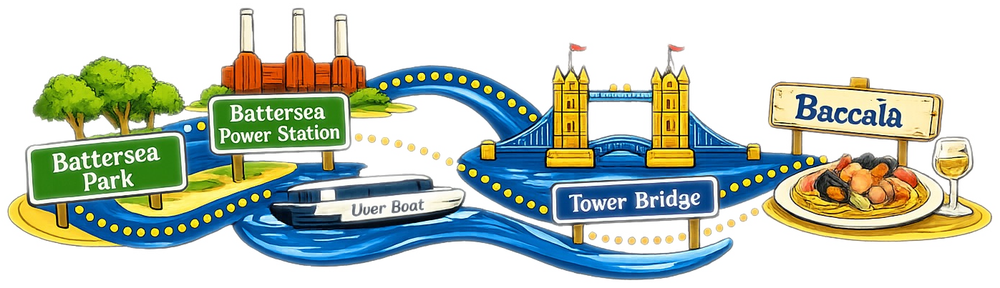

South West to South East · Full day
A riverside morning, a Thames boat crossing, one of London's most iconic walks and dinner on Bermondsey Street — all with your dog.

🌳 Battersea Park — morning walk 🏭 Battersea Power Station — lunch ⛵ Uber Boat — Thames crossing 🌉 Tower Bridge — afternoon explore 🍝 Baccalà — dinner
Stop 01
Your starting point. The park has a long off-lead area along the riverside — a perfect way to burn off some energy before heading into the city. Go early and take the river path.
Stop 02
A short walk from the park. Several restaurants here welcome dogs — it's a good opportunity to let your dog settle before the boat. The full current list is maintained by the venue and linked in our bio.
Stop 03
Board at Battersea Power Station Pier. Dogs travel free and the journey to Tower Bridge takes around 30 minutes. Sit on the open-air deck if the weather holds — genuinely one of the best views London has to offer.
Stop 04
Get off at London Bridge City Pier and walk along the south bank towards the bridge. The area gets busy in the afternoon so keep your dog close, but the riverside walk between the pier and Borough Market is one of those iconic London moments that still gets you every time.
Stop 05
A 12-minute walk from Tower Bridge brings you to Bermondsey Street — one of the most dog-friendly streets in London. Baccalà is a great Italian seafood restaurant that genuinely welcomes dogs. Book ahead. You and your dog will have earned the rest.